CSE 599 · Academic Case Study
FNO-Diffusion for Brain MRI Segmentation
Goal: evaluate brain tumor segmentation on BraTS 2021 by replicating two baselines (FNO segmentation and diffusion U-shape) and testing a hybrid that integrates FNO into diffusion and supervised branches. Hypothesis: FNO global modeling plus diffusion refinement could outperform each model alone.
Implementation: PyTorch on 1× NVIDIA Tesla V100, with training time of about 2–8 hours depending on model.
Quick Facts
Core dataset and experiment setup.
Dataset
BraTS 2021 (2D slices from 3D volumes)
Task
Brain tumor segmentation (multi-class)
Metric
DICE coefficient
Compute
1× NVIDIA Tesla V100
Data split
70% train / 20% val / 10% test
Training time
~2–8 hours
Dataset + Preprocessing
- BraTS 2021 volume size: 240×240×155, reshaped to slice-wise 2D images.
- Data augmentation: random horizontal and vertical flips.
- Labels converted to one-hot format with background and tumor subregion classes.
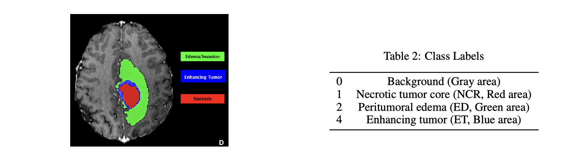
Problem & Motivation
Accurate tumor boundary delineation is clinically important, while manual annotation is slow and error-prone.
- Reliable segmentation is important for treatment planning and follow-up.
- Boundary precision is hard in heterogeneous lesions.
- This project tests whether global spectral modeling plus diffusion refinement helps.
Approach
Three model tracks under the same data split and DICE evaluation.
A) FNO Segmentation Baseline
Global context via spectral convolution with Fourier layers.
B) Diffusion with U-shape Baseline
Dual-path diffusion-guided supervision with U-shape locality and skip connections.
C) Proposed FNO-Diffusion Hybrid
Replace UNet modules with FNO blocks in diffusion and supervised branches.
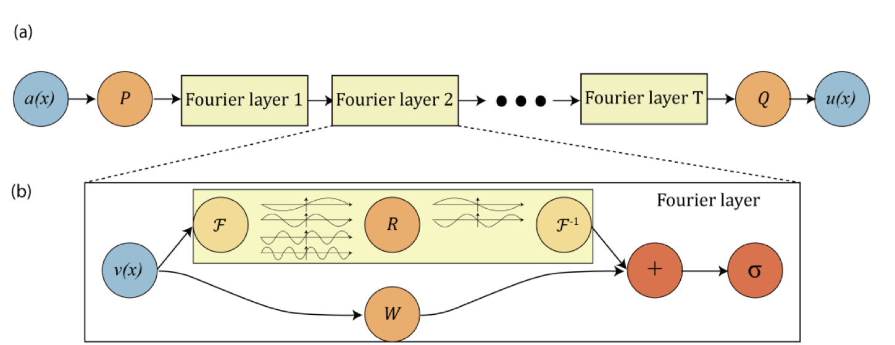
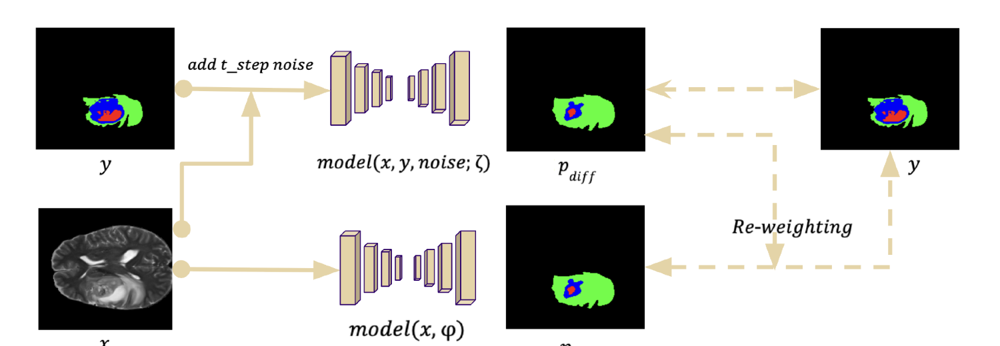
Training Details (optional)
FNO: modes k1=k2=10, width 16, 3 repeated blocks per branch, batch 8, epochs 50, Adam lr 3e-4, GELU, Dice + CE (lambda=0.5).
Diffusion U-shape: Adam lr 1e-2, batch 32, max 300 epochs, early stop 50, EMA 0.99, Dice + CE, dynamic class weights, unsupervised weight 10.
FNO-Diffusion: SGD momentum 0.9, weight decay 3e-5, lr 0.001, batch 32, EMA 0.99, timesteps 1000 (sampling 10), FNO modes [16,16], width 32, blocks/channel 3, time embedding 512, dropout 0.5.
Visual Results
Three-column qualitative comparison: Input, Ground Truth, Prediction.
FNO Baseline (Figure 4, PDF page 8)
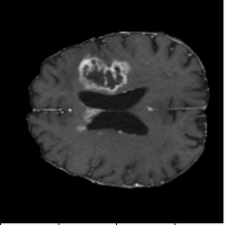
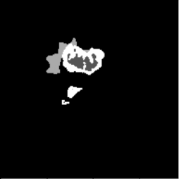
DICE 65.13% · Captures global context but loses boundary precision.
Diffusion with U-shape (Figure 5, PDF page 8)
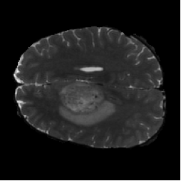
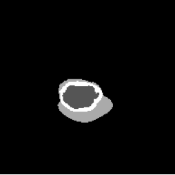
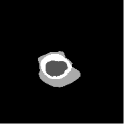
DICE 69.44% · Best qualitative and quantitative segmentation quality.
FNO-Diffusion Hybrid (Figure 6, PDF page 8)
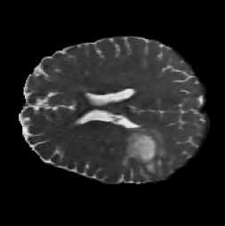
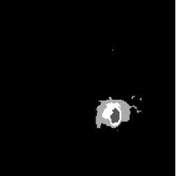
DICE 57.03% · Hybrid underperformed, especially on fine local boundaries.
Quantitative Results
Ranked DICE comparison on the test set.
| Rank | Model | DICE |
|---|---|---|
| 1 | Diffusion with U-shape | 69.44% |
| 2 | FNO baseline | 65.13% |
| 3 | FNO-Diffusion hybrid | 57.03% |
#1 Diffusion with U-shape
DICE: 69.44%
#2 FNO baseline
DICE: 65.13%
#3 FNO-Diffusion hybrid
DICE: 57.03%
DICE by Model
Lessons Learned
MedSegDiff-V2 was originally the planned foundation for the hybrid model. The goal was to combine FNO with MedSegDiff so the diffusion pipeline could use spectral global context for brain MRI segmentation. In practice, MedSegDiff-V2 was difficult to deploy, and its architecture did not provide a clean insertion point for FNO blocks. Adding FNO looked less like a modular extension and more like changing the whole model structure, so the experiment shifted toward a simpler diffusion U-shape baseline where each component could be isolated and tested.
What became workable
- The diffusion U-shape pipeline offered a clearer modular structure than MedSegDiff-V2.
- Forward diffusion, denoising, and loss components were easier to isolate for debugging.
- Swapping components (including FNO blocks) was straightforward in the modular baseline.
What stayed difficult
- Reproducing MedSegDiff-V2 for multiclass segmentation failed despite reasonable binary performance.
- Deployment and training were unstable, making multiclass tuning hard to trust.
- Timestep embeddings with FNO blocks caused shape mismatches and conditioning issues.
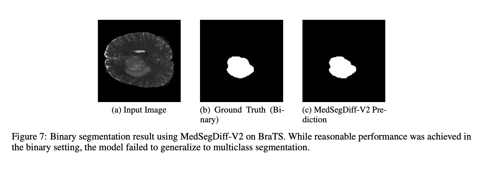
Future Work
1. Prioritize stable baselines
Start from a reliable U-Net diffusion baseline before introducing complex hybrid modules.
2. Keep 2D before 3D
Start with 2D slices and only extend to 3D after strong stability is confirmed.
3. Run loss ablations
Test dynamic weighting strategies and loss balancing with controlled ablation studies.
4. Preserve local pathways
Use spectral blocks for global context while retaining conv/attention paths for boundary detail.